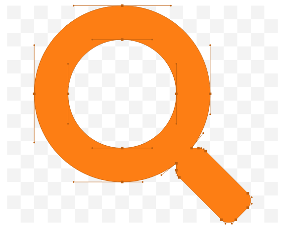
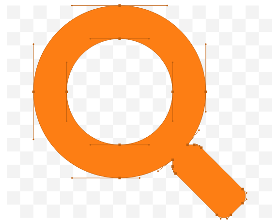
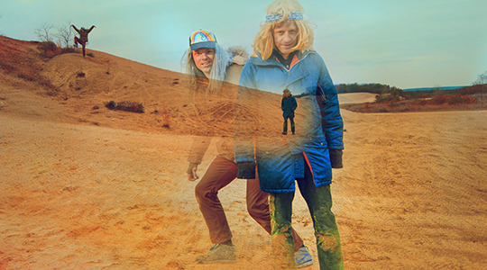

Lightning Bolt,Festsaal Kreuzberg, Fri 01.02.2019
Active for the best part of 25 years, Rhode Island duo Lightning Bolt are one of the underground’s best known purveyors of noise rock. Bassist Brian Gibson and drummer-vocalist Brian Chippendale, stage confrontational gigs. Known for setting up their own stage and PA system, Lightning Bolt play an array of exciting and bizarre settings. Known for confrontational performances, Lightning Bolt revolutionized underground rock in immeasurable ways. Throughout their rising fame, they’ve consistently maintained their own indie and unpretentious path, focusing on concerts that bring together artist and audience through sonic pandemonium. Taking cues from the minimalist school of composition as well as experimental noise acts such as Boredoms and Ruins, Lightning Bolt’s music amalgamates distorted bass riffs, indecipherable vocals as heard via a telephone receiver microphone, and frenetic drumming that constantly decentres the rhythmic weight of their live sets. The band’s eponymous full length was released on Load in 1999, followed by Ride The Skies two years later. Their third album, Wonderful Rainbow, exposed the duo to a broader audience thanks to its critical success and expanded musical palette. According to Pitchfork, “each track’s muscular incline eventually delivers a rewarding endorphin high… The overall effect is less redundant than generous, making Wonderful Rainbow like a pot of gold at the end of another invigorating sky-ride.” The duo’s initial creative momentum culminated in the near universal acclaim for 2005’s Hypermagic Mountain. Since then, Lightning Bolt have released two full lengths—Earthly Delights (2009) and Fantastic Empire (2015)—in addition to nurturing their own individual projects. Wilson soundtracked the computer game Thumper, and has worked as a game artist on Guitar Hero and Rock Band. Chippendale explores solo composition as Black Pus, and is also a well known graphic artist responsible for the surreal landscapes which adorned Lightning Bolt’s earlier records.